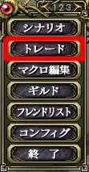

他のプレイヤーがあなたにトレードを申し込むと、「○○からトレードの申し出を受けました」とかいうメッセージが出てきます。
知っているプレイヤーからの申し込みならば、トレードを承諾してください。いくら相手が申し込んでも、こちらが承諾しない限りトレードはできません。
トレードを承諾するには、メニュー2ページ目の「トレード」を選ぶとトレードを承諾することになります。一定時間経つと自動的にトレードが無効になってしまうので、早めに承諾してください。
こちらがトレードを承諾すると、「トレードを申し入れました」というメッセージが出てトレードウィンドウが出てきます。
アイテムのトレードの仕方は、何度も書くのが面倒くさいので「トレードを申し込む」を見てください。
 |
|